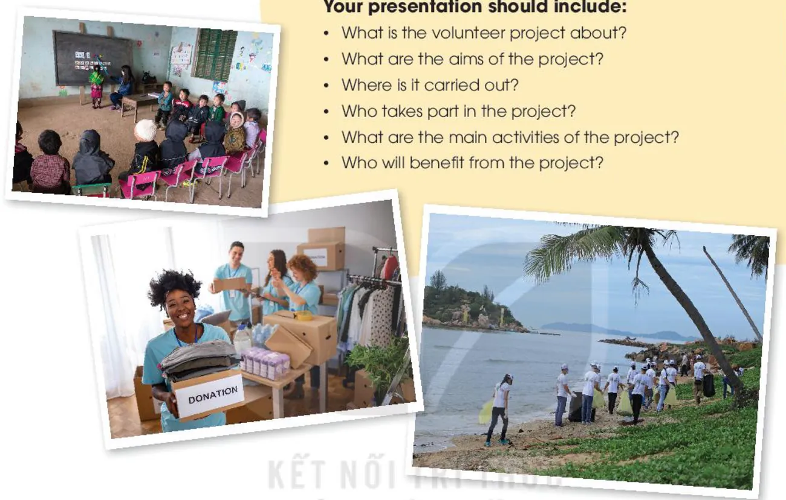

Looking back and Project
Lesson 8 — Review the unit · a volunteer project
4Five stops in 45 minutes
- ✍️
Warm-up
Brainstorming
4 min - 🔁
Looking back
Stress · words · grammar
12 min - 👵
Game
Help Grandma Get Home
9 min - 📣
Project
A volunteer project
18 min - ✅
Wrap-up
Now I can …
2 min
Brainstorming
Warm-up
4 minutesTwo-syllable words with the same spelling
Two teams. In 2 minutes, write as many words as you can that can be both a noun and a verb.
Ideas increase · record · present · import · export · perfect · rebel
Looking back
Pronunciation · vocabulary · grammar · page 50
12 minutesMark the stressed syllables in the words in bold
1. We hope that the number of volunteers will increase this year. inCREASE (verb)
2. When will you present your report about the volunteer project? preSENT (verb)
3. I always keep a record of visitors’ donations. REcord (noun)
4. We still import too many products that can be made in our country. imPORT (verb)
Fill in the gaps with the correct forms of the words in brackets
1. There are (end) ______ opportunities for teenagers to volunteer these days. endless
2. We were very (excite) ______ to help children organise afterschool activities. excited
3. The local people were really (help) ______. They supported us all the time we stayed there. helpful
Fill in the gaps · 4–5
4. We need more (volunteer) ______ for our community projects. volunteers
5. Our charity groups received generous (donate) ______ from the local people. donations
Past simple or past continuous?
1. I first (meet) ______ Lan while we (work) ______ as volunteers. met · were working
2. While we (walk) ______ home, we (see) ______ a girl crying near a bus stop. were walking · saw
3. Kim (notice) ______ the poverty of the area while she (deliver) ______ free meals to old people. noticed · was delivering
4. When I (arrive) ______ at the community centre, a guest speaker (give) ______ a speech. arrived · was giving
Help Grandma Get Home
Review game · 8 obstacles
9 minutesA volunteer project
Project · page 51
18 minutesA volunteer project

Present your group’s findings:
- What is it about?
- Aims?
- Where?
- Who takes part?
- Main activities?
- Who benefits?
Listen and give feedback
- 👋
Delivery
Greeted the audience, spoke clearly, used photos, concluded well.
- 📋
Content
All six questions answered.
- ❓
Ask
One question for each group.
Now I can …
- stress same-spelling words
- community words
- -ed / -ing · -ful / -less
- past simple vs past continuous
- read about a volunteer club
- talk about benefits
- listen to an announcement
- write an application letter
- express feelings
- Save the Children
Tick ✓ / ✓✓ / ✓✓✓ in your book. Homework: workbook Unit 4 review; prepare Unit 5 — Inventions · Lesson 1 (page 52).